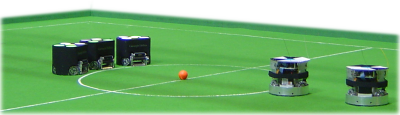

Desafios
-
Integração de várias engenharias
A SSL é uma competição de robôs físicos, portanto inclui conhecimentos em eletrônica e mecânica, além de ser uma competição com foco na cooperação e na inteligência artificial, portanto incluindo conhecimento de computação. Esse trio, sempre presente nas aplicações de robótica, faz com que se necessite de conhecimento variado em várias áreas. Não adianta uma área estar mais avançada que as outras, pois as três formam o projeto. -
Passagem de conhecimento
Após o término da graduação, os alunos participantes da equipe em geral deixam de ser ativos no grupo. Como esses alunos possuem um conhecimento melhor sobre o projeto, sua saída acarreta em uma perda de conhecimento para a equipe como um todo. A falta de uma forma simples de centralização do conhecimento prejudica a equipe todos os anos. -
Somente alunos no projeto
Os alunos do IME precisam dedicar bastante tempo para, simplesmente, acompanharem o curso, além de terem provas semanalmente, semanas de prova no meio e no fim do período e semanas de instrução militar. Tal carga de estudos em geral desmotiva os alunos a participarem das iniciativas além de afastar os interessados várias vezes no mês devido às atividades obrigatórias. Assim, por não haver a participação de professores, o ritmo das atividades não é constante e a motivação dos alunos é bastante variável. Entretanto, os membros atuais do projeto tem se empenhado para manter um trabalho constantemente progressivo.
RoboCup SSL
O que é a RoboCup?
A RoboCup é uma competição anual de robótica fundada em 1997 com o objetivo de estimular pesquisas em robótica e inteligência artificial oferecendo um desafio público.O desafio proposto pela RoboCup tem como objetivo principal:
"No meio do século 21, uma equipe de futebol de robôs autônomos humanóides deve ganhar um jogo de futebol, seguindo as regras oficiais da FIFA, contra o vencedor da Copa do Mundo mais atual."
A competição possui 5 grandes competições principais, cada uma com suas ligas e subligas. A RoboIME participa somente da Small Size League.
O que é a Small Size League?
A Small Size League (SSL), também conhecida como F180, é uma competição com foco no problema da cooperação e no controle multi-agente inteligente em um ambiente altamente dinâmico com um sistema híbrido (centralizado/distribuído).
O jogo de futebol de robôs da SSL acontece com dois times de 6 robôs cada. Cada robôs com dimensões de acordo com as regras especificadas no site da competição. Os robôs têm que tem no máximo 180mm de diâmetro e não mais que 150mm de altura. Os robôs jogam futebol com uma bola de golf laranja em um campo de carpete verde de 6m de largura por 9m de comprimento.

Todos os objetos no campo são rastreados por um sistema de visão padronizado que processa os dados fornecidos pelas quatro câmeras localizadas 4m acima do campo. O sistema de visão, chamado SSL-Vision, é um projeto open-source mantido pela comunidade da SSL.
Cada equipe deve ter um computador que vai receber os comandos do juíz (à partir de agora chamado de referee) e as informações de posição dos robôs via Ethernet. Em geral esses computadores fazem todo o processamente necessário para a coordenação e controle dos robôs. A comunicação com os robôs é feita via wireless.
História
A RoboIME participa de competições desde 2010.Resultados
- Em 2011 foi vice-campeão na Latin American Robotics Competition (LARC).
- Em 2012 foi vice-campeão na Latin American Robotics Competition (LARC) e participou da RoboCup na Cidade do México.
- Em 2013 participou da RoboCup em Eindhoven, na Holanda.
- Em 2014 ficou em 4º lugar na Latin American Robotics Competition (LARC) e participou da RoboCup em João Pessoa.
Competições
LARC 2010
OBR 2011
ROBOCUP 2012
OBR 2012
Equipe
A RoboIME é coordenada pelo Prof. Dr. Paulo Rosa, diretor do Laboratório de Robótica e Inteligência Computacional, e gerenciada pelos próprios alunos da iniciativa. Por ser uma equipe formada por alunos, em geral de graduação, a troca de integrantes é bem comum durante os anos, o que ocasiona vários problemas (que serão listados abaixo).Professores:
Alunos:
Publicações
-
Segre, J. e Bramigk, V. "Uma Ferramenta de Representação Comportamental Baseada em Otimização para Futebol de Robôs." Orientadores: Paulo Fernando Ferreira Rosa e Bruno Eduardo Madeira
-
Almeida, D. e Amaral, T. "Planejamento de Movimento Baseado em Física no Ambiente da Small Size League" Orientador: Paulo Fernando Ferreira Rosa